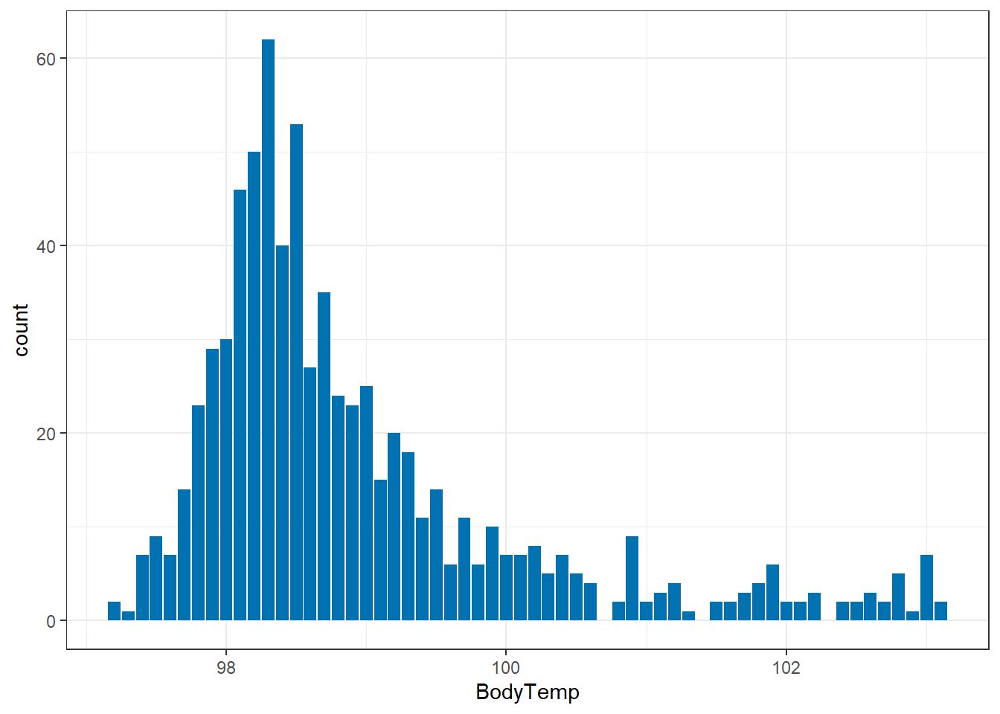
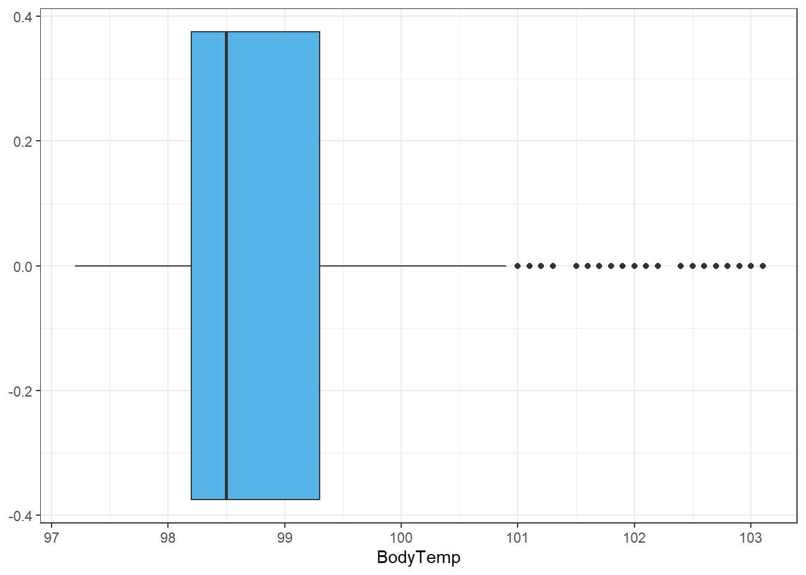
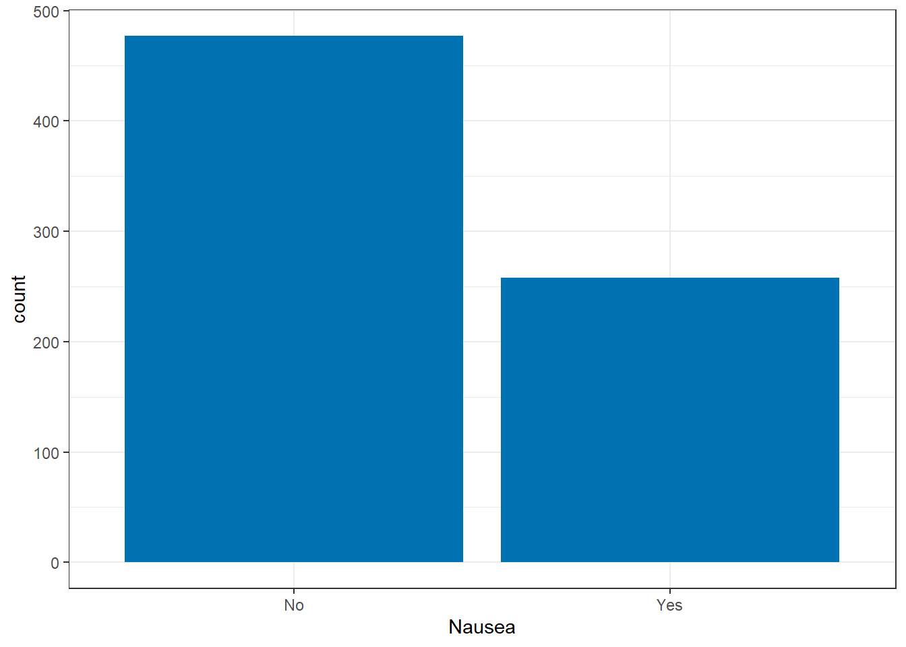
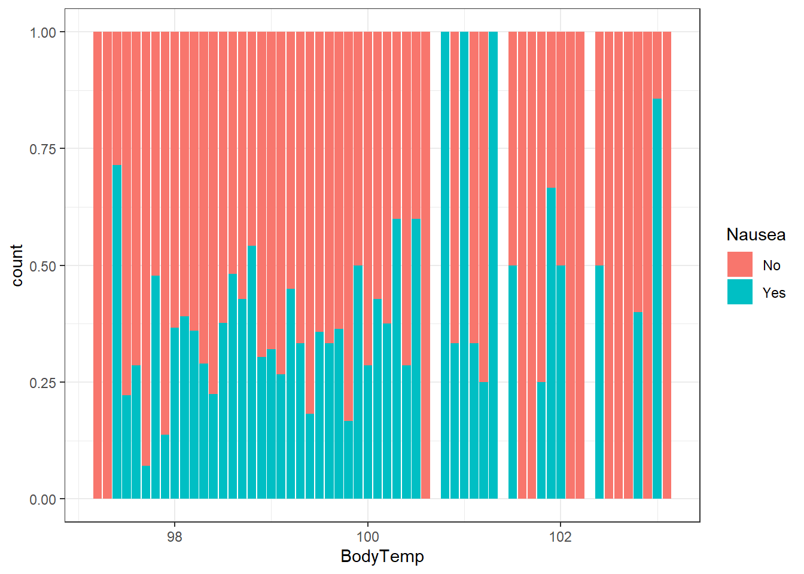

load("../../fluanalysis/data/clean_symptoms.rds")Exploration
Load in the Data
Dora the Explorer!
Goals: - For each (important) variable, produce and print some numerical output (e.g. a table or some summary statistics numbers).
For each (important) continuous variable, create a histogram or density plot.
Create scatterplots or boxplots or similar plots for the variable you decided is your main outcome of interest and the most important (or all depending on number of variables) independent variables/predictors. For this dataset, you can pick and choose a few predictor variables.
Any other exploration steps that might be useful.
Continuous Variable: Body Temperature
Let’s jump in with our continuous variable first.
Summary Table
select_sympact%>% #need to include na.rm exception since we have those 5 pesky NAs
summarize(Avg = mean(BodyTemp, na.rm= T),
Min = min(BodyTemp, na.rm= T),
Max = max(BodyTemp, na.rm= T),
Range = Max-Min,
Q25 = quantile(BodyTemp, probs = .25, na.rm= T),
Median = median(BodyTemp, na.rm= T),
Q75 = quantile(BodyTemp, probs = .75, na.rm= T)) Avg Min Max Range Q25 Median Q75
1 98.93507 97.2 103.1 5.9 98.2 98.5 99.3Off the bat, the good news is it doesn’t seem like we have any crazy outliers, as evidenced by the similarities between median and mean. Let’s make a graph to see if the 103 is an “outlier” (not large enough to be a true outlier, but maybe a lone wolf) or if there’s several participants with a fever > 100.
Since we removed the unique visit number, we only have the one continuous variable, so this limits our possible EDA graph options.
EDA Graphs: Body Temperature
ggplot()+
geom_bar(aes(x=BodyTemp), data=select_sympact, fill ="#0072B2")+ #I made it a pretty color for fun :)
theme_bw()
So we can see that having a temperature over 100 isn’t unusual. This is good to know moving forward. Are any of them considered true outliers?
ggplot()+
geom_boxplot(aes(BodyTemp), data=select_sympact, fill ="#56B4E9")+ #I made it a pretty color for fun :)
theme_bw()
Alright this is good to know, even though a good number of people have temperatures greater than 101, by the spread available they are outliers in the data. Since there are so many and on a continuous scale, we won’t remove them, but these bad boys may be the reason we see the (slight) difference between median and mean.
Off the top of my head when looking at possible predictors of body temperature, I would assume things like swollen lymph nodes, chills, subjective fever, myalgia, and weakness (Y/N) would be predictors. Let’s do some quick explorations with these variables.
select_sympact$Temp_group<-ifelse(between(select_sympact$BodyTemp , 97, 97.9), 97,
ifelse(between(select_sympact$BodyTemp , 98, 98.9), 98,
ifelse(between(select_sympact$BodyTemp , 99, 99.9), 99,
ifelse(between(select_sympact$BodyTemp , 100, 100.9), 100,
ifelse(between(select_sympact$BodyTemp , 101, 101.9), 101,
ifelse(between(select_sympact$BodyTemp , 102, 102.9), 102, 103))))))
table(select_sympact$Temp_group, select_sympact$SwollenLymphNodes)
No Yes
97 48 44
98 223 167
99 81 55
100 31 23
101 18 9
102 12 10
103 5 4table(select_sympact$Temp_group, select_sympact$ChillsSweats)
No Yes
97 29 63
98 69 321
99 18 118
100 8 46
101 5 22
102 1 21
103 0 9table(select_sympact$Temp_group, select_sympact$SubjectiveFever)
No Yes
97 46 46
98 128 262
99 41 95
100 8 46
101 4 23
102 2 20
103 1 8table(select_sympact$Temp_group, select_sympact$Weakness)
None Mild Moderate Severe
97 12 27 38 15
98 25 130 182 53
99 7 37 69 23
100 3 11 26 14
101 1 7 10 9
102 1 9 9 3
103 0 2 4 3table(select_sympact$Temp_group, select_sympact$Myalgia)
None Mild Moderate Severe
97 16 23 41 12
98 44 114 178 54
99 8 44 56 28
100 8 11 25 10
101 1 8 12 6
102 2 9 8 3
103 0 4 5 0Based on the numbers alone, it seems like all of these variables are strong indicators of body temperature. The most questionable would be swollen lymph nodes. Checking these out in the analysis will definitely be helpful and should provide some solid models.
Moving on…
Let’s see what our categorical variable has in store for us.
Categorical Variable: Nausea
First, let’s see what our options for nausea entail:
unique(select_sympact$Nausea)[1] No Yes
Levels: No YesJust, yes and no, no maybe. This is good to know.
Historically, for “extreme” categories with no midline, I’ve used JMP to help with analysis, especially with factorial models. So this will be a learning experience for me. Off the bat, let’s compare general counts between the two options.
Summary Table
select_sympact%>%
count(Nausea) Nausea n
1 No 477
2 Yes 258EDA Graphs: Nausea
ggplot()+
geom_bar(aes(x=Nausea), data=select_sympact, fill ="#0072B2")+
theme_bw()
For the benefit of the subjects, it’s nice to see most people aren’t experiencing nausea, though 258 cases isn’t something to ignore.
Based on the symptoms available, I would assume that ab(domen) pain, chest pain, insomnia, vision, and vomit would be associated with nausea.
table(select_sympact$Nausea, select_sympact$AbPain)
No Yes
No 446 31
Yes 196 62table(select_sympact$Nausea, select_sympact$ChestPain)
No Yes
No 342 135
Yes 159 99table(select_sympact$Nausea, select_sympact$Insomnia)
No Yes
No 215 262
Yes 101 157table(select_sympact$Nausea, select_sympact$Vision)
No Yes
No 468 9
Yes 248 10table(select_sympact$Nausea, select_sympact$Vomit)
No Yes
No 463 14
Yes 193 65Based on these contingency tables, the strongest evidence of a symptom of nausea is insomnia, but these will be further evaluated in the model as well.
Both?
Great, now we have a basic understanding of these symptoms independently, but can we look at them together or if they relate to one another?
Let’s make a basic contingency table with temp grouped by each degree
table(select_sympact$Temp_group, select_sympact$Nausea)
No Yes
97 67 25
98 248 142
99 90 46
100 33 21
101 16 11
102 18 4
103 3 6I couldn’t get the contingency table to give me conditional rates, so below are the calculated rates (%) of nausea among each temperature group:
97: 27.2
98: 36.4
99: 33.8
100: 38.9
101: 40.7
102: 18.2
103: 66.7
ggplot()+
geom_bar(aes(x=BodyTemp, fill = Nausea), position = "fill", data=select_sympact)+
theme_bw()
I chose a “fill” position here because since there was such a dense amount of body temperatures around 98 degrees it was hard to see if there was a trend between nausea and body temperature. Once we standardize the chart to represent the ratio at each degree (group) we can see there may be a general increase of rates of nausea with higher body temperatures, but we should measure this further (quantitatively).
When looking at the contingency tables, this is still a bit varied. The relationship may be something we look at more in the analysis, but for now, we have inconclusive results about the interrelation of nausea and body temperature.